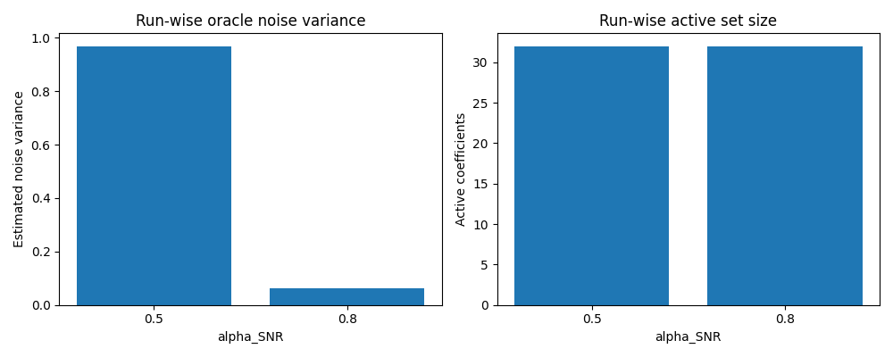

Note
Go to the end to download the full example code.
10. Data Generation#
This tutorial mainly explains the high-level DataGenerator class.
It shows how DataGenerator orchestrates the upstream pipeline:
source simulation;
leadfield loading;
sensor simulation;
source estimation;
tabular run metadata returned as a
DataFrame.
Scientific motivation#
DataGenerator is the workflow orchestrator behind CaliBrain’s data
generation stage. Unlike the lower-level classes, it does not represent one
scientific operation. Instead, it runs complete configured experiments over
solver, data, and noise settings and returns run-wise metadata that can be
passed to downstream workflow stages.
This tutorial uses a tiny synthetic setup so the class can be exercised directly in the documentation build.
from tempfile import TemporaryDirectory
import matplotlib.pyplot as plt
import numpy as np
from mne.io.constants import FIFF
from calibrain import DataGenerator, LeadfieldBuilder, SensorSimulator, SourceSimulator, gamma_map_sflex
RANDOM_SEED = 83
tmpdir = TemporaryDirectory()
FIG_DIR = tmpdir.name
Build a tiny leadfield fixture#
DataGenerator expects LeadfieldBuilder to provide leadfields. In the
current implementation, its internal data preparation step calls
retrieve_mode="load". For a runnable tutorial we therefore provide a
deterministic payload through the same high-level builder API.
Units:
source amplitudes are in
nAm;source coordinates are represented in
m;the synthetic EEG leadfield is interpreted as
µV / nAm.
rng = np.random.default_rng(RANDOM_SEED)
subject = "demo_subject"
n_sensors = 16
n_sources = 32
src_coords = rng.normal(scale=0.04, size=(n_sources, 3))
leadfield = rng.normal(scale=0.03, size=(n_sensors, n_sources))
leadfield /= np.maximum(
np.linalg.norm(leadfield, axis=0, keepdims=True),
np.finfo(float).eps,
)
leadfield *= 0.6
q_basis = np.zeros((n_sources, 3, 0), dtype=float)
print("leadfield shape:", leadfield.shape)
leadfield_dir = TemporaryDirectory()
np.savez(
f"{leadfield_dir.name}/{subject}_fixed_leadfield.npz",
leadfield=leadfield,
sensor_kind=FIFF.FIFFV_EEG_CH,
sensor_units=FIFF.FIFF_UNIT_V,
sensor_unitmult=FIFF.FIFF_UNITM_MU,
coil_type=FIFF.FIFFV_COIL_EEG,
src_coords=src_coords,
Q_basis=q_basis,
)
leadfield shape: (16, 32)
Configure the generator#
The class is configured from three grids:
solver_param_gridfor estimator hyperparameters;data_param_gridfor source/sensor-generation settings;noise_param_gridfor workflow noise handling.
Here we keep them deliberately small. Two alpha_SNR values produce two
runs with otherwise matched settings.
erp_config = {
"tmin": -0.1,
"tmax": 0.8,
"stim_onset": 0.0,
"sfreq": 100,
"fmin": 2,
"fmax": 8,
"amplitude_distribution": {
"median": 8.0,
"sigma": 0.15,
"clip": [2.0, 20.0],
},
"random_erp_timing": False,
"erp_min_length": 20,
}
source_simulator = SourceSimulator(ERP_config=erp_config)
leadfield_builder = LeadfieldBuilder(leadfield_dir=leadfield_dir.name)
sensor_simulator = SensorSimulator()
generator = DataGenerator(
solver=gamma_map_sflex,
solver_param_grid={
"sigma": [0.01],
"max_iter": [150],
"tol": [1e-7],
},
data_param_grid={
"subject": [subject],
"nnz": [4],
"orientation_type": ["fixed"],
"alpha_SNR": [0.5, 0.8],
"sensor_white_noise_std": [0.2],
},
noise_param_grid={
"noise_type": ["oracle"],
},
ERP_config=erp_config,
source_simulator=source_simulator,
leadfield_builder=leadfield_builder,
sensor_simulator=sensor_simulator,
save_posterior_stats=False,
random_state=RANDOM_SEED,
)
Run the generator#
DataGenerator.run returns a pandas.DataFrame with one row per run.
Each row includes solver metadata, source/sensor settings, and run-level
diagnostics.
results = generator.run(
nruns=1,
fig_path=FIG_DIR,
n_jobs=1,
)
print("result columns:", list(results.columns))
print(results[["global_run_id", "solver", "noise_type", "alpha_SNR", "nnz"]])
2026-06-13 23:05:04 - INFO - [run: 1/1 | config: 1/2 | total: 1/2] gamma_map_sflex | oracle | 4 NNZ | 0.5 SNR
2026-06-13 23:05:04 - INFO - [run: 1/1 | config: 2/2 | total: 2/2] gamma_map_sflex | oracle | 4 NNZ | 0.8 SNR
result columns: ['run_id', 'global_run_id', 'seed', 'solver', 'noise_type', 'max_iter', 'sigma', 'tol', 'alpha_SNR', 'nnz', 'orientation_type', 'sensor_white_noise_std', 'subject', 'sensor_kind', 'coil_type', 'n_sources', 'n_times', 'gamma', 'noise_var', 'active_indices_size']
global_run_id solver noise_type alpha_SNR nnz
0 1 gamma_map_sflex oracle 0.5 4
1 2 gamma_map_sflex oracle 0.8 4
What DataGenerator produces directly#
At class level, the direct products are:
one row per run in the returned
DataFrame;solver, source, and sensor metadata needed to compare runs.
Full workflow scripts can additionally persist summaries for later aggregation and calibration. This tutorial stays at class level and focuses on the direct in-memory products of the class itself.
Plot a small run summary#
This simple plot summarizes how the two tutorial runs differ in noise level and active-set size.
fig, axes = plt.subplots(1, 2, figsize=(10, 4))
alpha_labels = results["alpha_SNR"].astype(str).tolist()
xpos = np.arange(len(alpha_labels))
axes[0].bar(xpos, results["noise_var"])
axes[0].set(
xlabel="alpha_SNR",
ylabel="Estimated noise variance",
title="Run-wise oracle noise variance",
xticks=xpos,
xticklabels=alpha_labels,
)
axes[1].bar(xpos, results["active_indices_size"])
axes[1].set(
xlabel="alpha_SNR",
ylabel="Active coefficients",
title="Run-wise active set size",
xticks=xpos,
xticklabels=alpha_labels,
)
fig.tight_layout()

Summary#
DataGenerator is the high-level class that orchestrates the upstream
workflow. In this tutorial it:
loaded a leadfield through the standard builder API;
simulated source and sensor data;
ran
gamma_map_sflex;returned run metadata as a table.
This is the class-level precursor to the full workflow, where the same runs are repeated systematically across parameter grids.
Total running time of the script: (0 minutes 0.217 seconds)